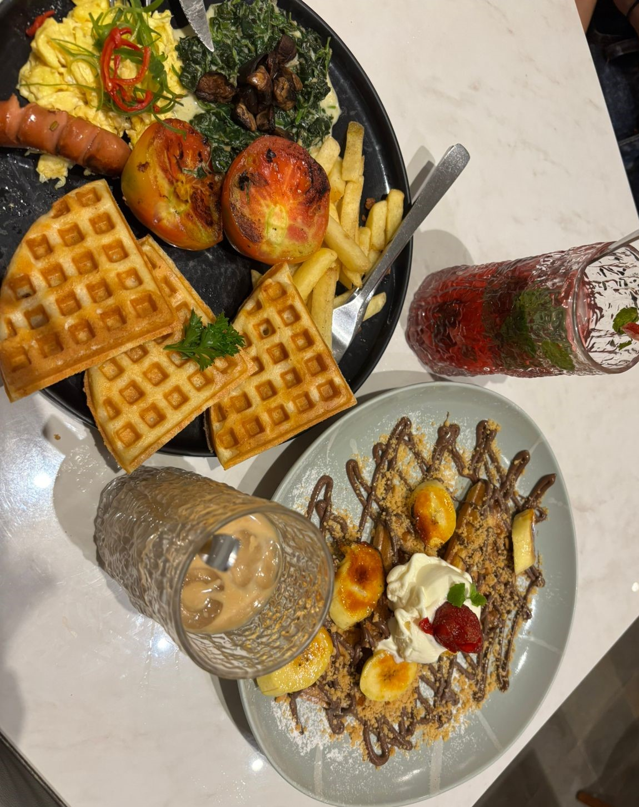
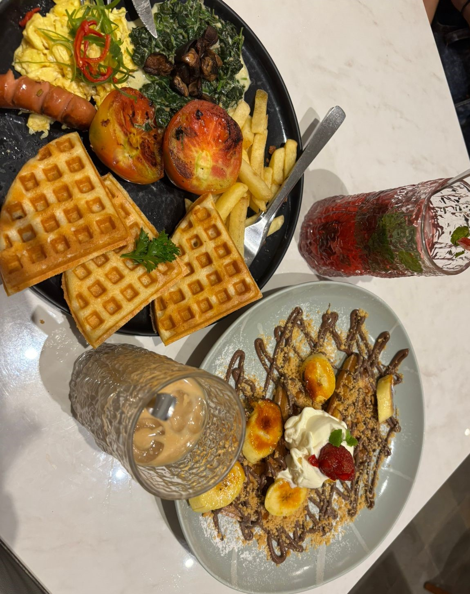

Cinema Bakery
Cinema Bakery adalah kafe dan patisserie di Yogyakarta yang menyajikan pastry khas Prancis dalam bangunan bergaya limasan Jawa. Dengan suasana estetik dan nyaman, tempat ini cocok untuk sarapan hingga ngopi santai. Menu andalan seperti croissant dan macaron disiapkan langsung oleh chef asal Prancis, dengan harga terjangkau dan fasilitas lengkap.
Jeeva Yogyakarta
Jeeva Yogyakarta menyajikan kuliner unik dengan menggabungkan makanan tradisional dan sentuhan modern, seperti Salmon Geprek, Wagyu Bakwan Jagung Benedict, dan Crispy Dori Lodeh. Minuman khas seperti Pisang Ijo Latte, Bakpia Pathuk Latte, dan Klepon Latte menghadirkan cita rasa lokal dalam versi kekinian. Tak ketinggalan, dessert seperti waffle dan es krim menambah lengkap pengalaman kuliner kreatif ini.